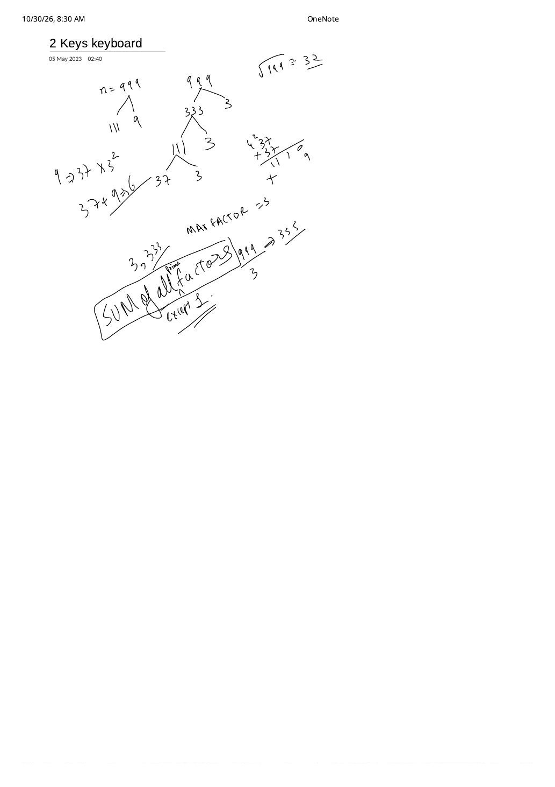

LC 650: 2 Keys Keyboard — Why Minimum Moves Equal the Sum of Prime Factors
Expanded from handwritten competitive coding study notes (01_2_Keys_keyboard.pdf) · View original handwritten page
1. Problem Setup: Multiplicative Blocks of Keystrokes
Initially a notepad screen contains a single character 'A' (length $1$) and an empty clipboard. Only two operations are permitted, each costing $1$ step:
- Copy All: Copies the entire current screen buffer onto the clipboard (overwriting whatever was there).
- Paste: Appends the clipboard contents onto the screen.
Given $1 \le n \le 1000$, find the minimum number of operations required to get exactly $n$ copies of 'A' on the screen.
2. Every Copy-All Starts a Multiplier Block
Group any valid sequence of keystrokes by its Copy All operations. Suppose the screen currently has $L$ characters, and we execute $1$ Copy All followed by $(k - 1)$ Pastes ($k \ge 2$):
- The screen length jumps from $L \longrightarrow L + (k - 1)L = k \cdot L$.
- The number of keystrokes spent in that block is $1 + (k - 1) = k$.
Therefore, reaching length $n$ from length $1$ through multiplier blocks $k_1, k_2, \dots, k_m$ ($k_i \ge 2$) is 1-to-1 equivalent to factoring $n = k_1 \cdot k_2 \cdots k_m$ with total cost $k_1 + k_2 + \dots + k_m$!
3. The Handwritten $n = 999$ Factor-Tree Discovery
On the handwritten page, we test $n = 999$ ($\lfloor \sqrt{999} \rfloor = 31$, noted as $\approx 32$) under two factorizations:
01_2_Keys_keyboard.pdf: Replacing any composite multiplier ($9 \to 3 + 3$, $27 \to 3 + 3 + 3$) strictly lowers keystroke count until only prime leaves remain ($37 + 3 + 3 + 3 = 46$).Proof: Sum of Prime Factors (With Multiplicity) Is Always Optimal
Suppose a factorization uses any composite multiplier $k = a \cdot b$ with integers $a, b \ge 2$. Since $(a - 1)(b - 1) \ge 1$:
(with equality $a + b = a b$ only at $2 + 2 = 2 \cdot 2 = 4$, and strict improvement $a + b \lt a b$ for every other pair such as $3 + 3 = 6 \lt 9$). Repeatedly splitting every composite factor until only primes remain proves that for $n = \prod_{i=1}^{m} p_i^{e_i}$:
4. $\mathcal{O}(n^2)$ DP vs. $\mathcal{O}(\sqrt{n})$ Trial Division
If you frame the problem via 1D DP first, $\text{dp}[i] = \min_{d \mid i,\, d \lt i} (\text{dp}[d] + i / d)$ always picks the largest proper divisor $d = i / p_{\min}$ (so $i / d = p_{\min}$ is the smallest prime factor of $i$), which unrolls into the exact same prime-factor sum!
// Optimal O(sqrt(n)) Time, O(1) Space — Sum of Prime Factors (with multiplicity)
class Solution {
public:
int minSteps(int n) {
int ops = 0;
for (int d = 2; d * d <= n; ++d) {
while (n % d == 0) {
ops += d; // 1 Copy All + (d - 1) Pastes = d operations
n /= d;
}
}
if (n > 1) ops += n; // Remaining prime factor > sqrt(original n)
return ops;
}
};class Solution:
def minSteps(self, n: int) -> int:
ops, d = 0, 2
while d * d <= n:
while n % d == 0:
ops += d
n //= d
d += 1
if n > 1:
ops += n
return opsQuick Sanity Checks
$n = 1 \implies 0$ (already have"A", base case — "except 1" in the boxed note!)$n = 3 \implies 3$ (Copy All, Paste, Paste)
$n = 9 \implies 3 + 3 = 6$ (Copy, Paste, Paste $\to$
"AAA"; Copy, Paste, Paste $\to$ 9 'A's)$n = 999 = 3^3 \times 37 \implies 3 + 3 + 3 + 37 = 46$ operations
From the Handwritten Notes
Expand the original handwritten page below to inspect the factor-tree exploration and boxed formula:
View original note — 01_2_Keys_keyboard.pdf (Factor tree of n = 999 & boxed "SUM of all prime factors except 1")


01_2_Keys_keyboard.pdf: Factoring $n = 999 \to 333 \times 3 \to 111 \times 3 \to 37 \times 3$, checking $\sqrt{999} \approx 32$, and boxing the prime-factor sum rule.